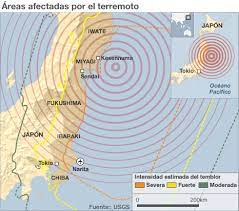
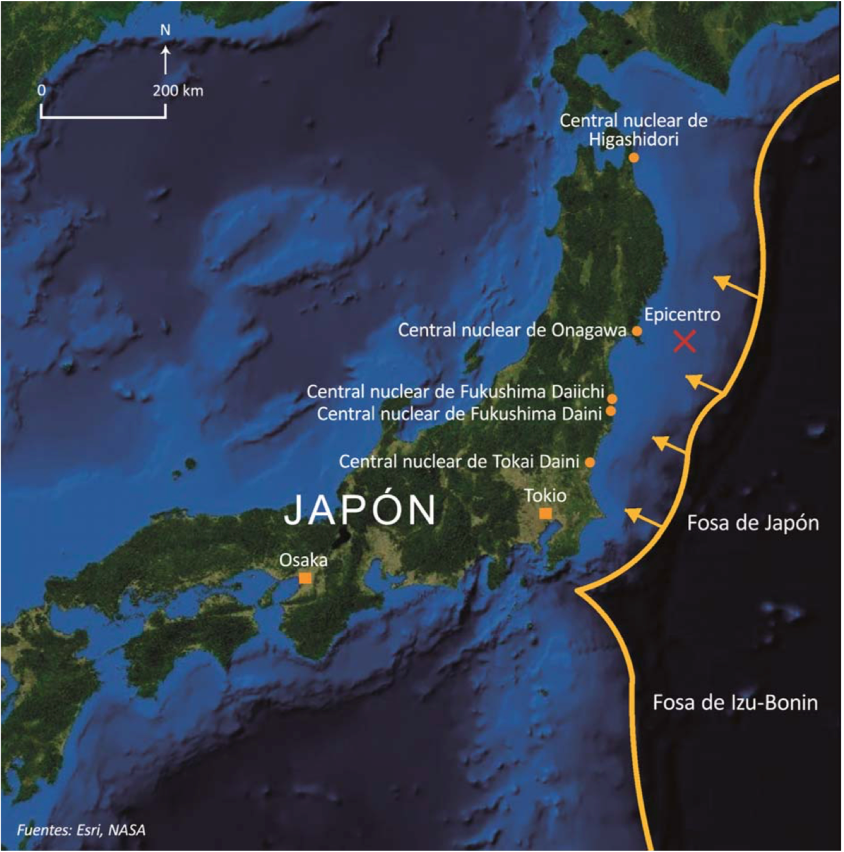

El gran terremoto de Japón del 11 de marzo de 2011 se produjo a las 14:46 horas (hora oficial de Japón) frente a la costa oriental de Japón. Fue causado por una liberación súbita de energía en la superficie de contacto de la placa tectónica del Pacífico con la placa tectónica Norteamericana, bajo la cual se sumerge. El sismo principal, de una magnitud de 9.0, duró más de dos minutos, con varios pulsos y réplicas fuertes. Este suceso figura entre los terremotos más grandes registrados hasta la fecha. Como consecuencia se produjo un enorme tsunami que barrió la costa del país, y todo lo que en ella de encontraba.


Pincha aquí para ver como se produjo El tsunami y algunos de sus efectos...